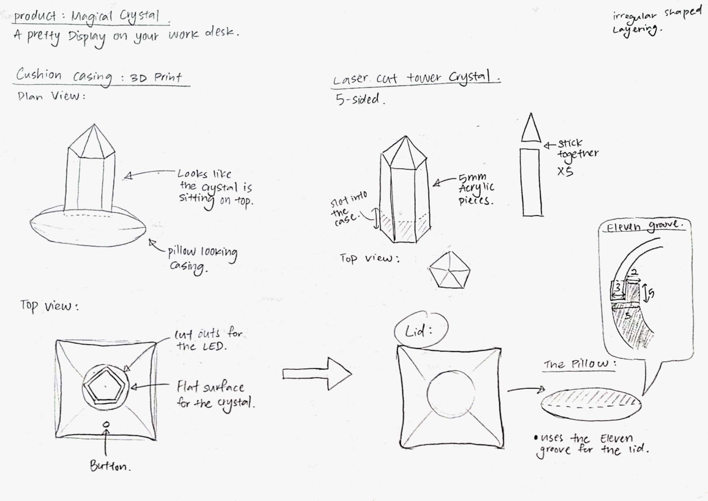
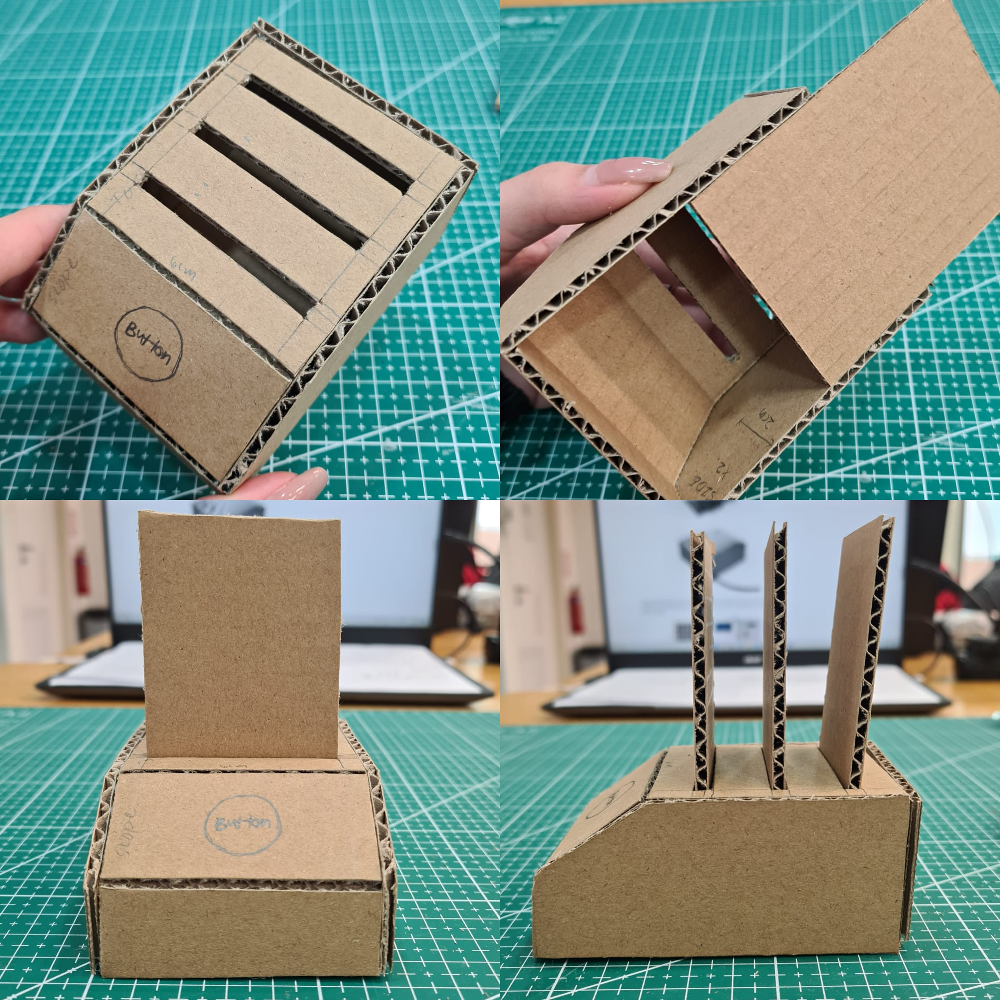
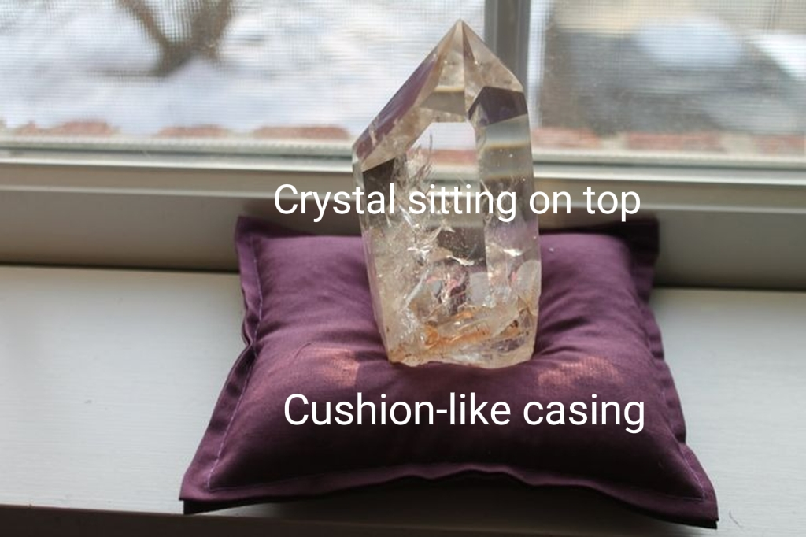
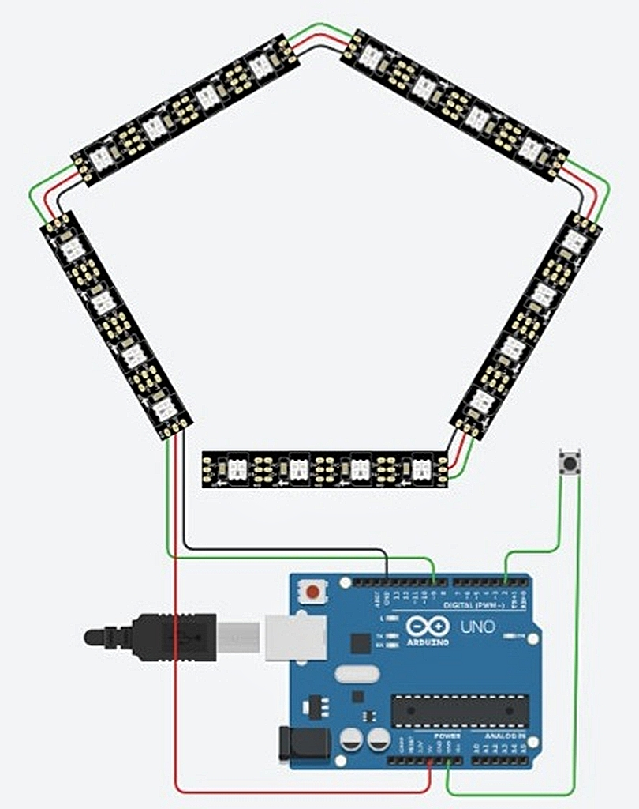
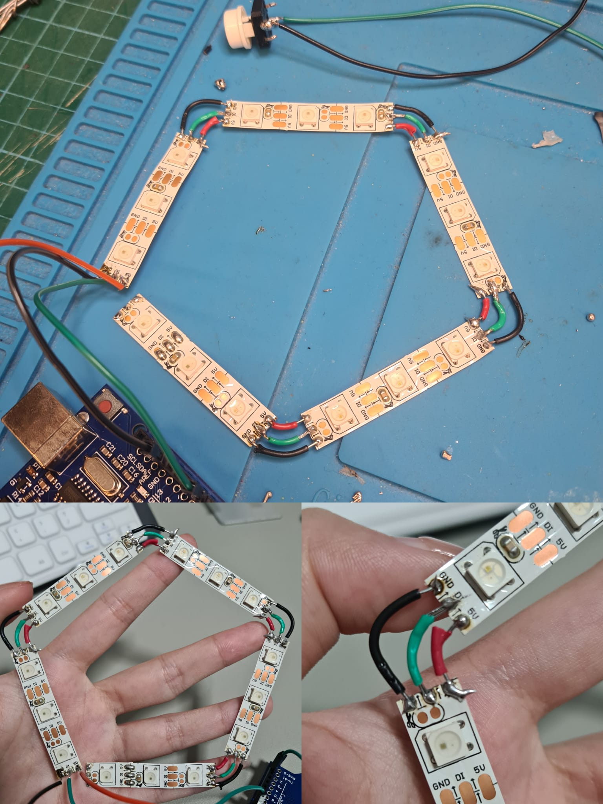

Navigation:
After acquiring the different prototyping skills, this project aims to integrate 3D printing, laser cutting and programming to create a product that is controlled by a micro-controller with different outputs and inputs. This page showcases the design process and documentations of working on my Final Project.
This is a Crystal Mood Lamp. It uses clear acrylic pieces that are laser cut to different shapes. These pieces are then placed together to form a 3D crystal tower that sits on top of a casing with LED lights shining through the acrylic.
It is a pretty light display on the desk or a decorative display on the shelves even when the lights are off. By pressing on the push button at the top of the casing, it changes the lights colour and pattern with each press.
The casing is in a spherical shape that resembles a cushion holding the crystal. The casing can be opened easily by removing the top lid and can be closed back seamlessly. Inside the casing, the LED strips are soldered in a way that allows the light to wrap around the acrylic crystal, creating an interesting effect on the acrylic pieces.
| Process | Features |
|---|---|
| Cad Design, Graphics | Top & Bottom Casing, Crystal 3D Model |
| Laser Cutting | Layered Crystal Pieces |
| 3D Printing | Casing to host the acrylic and electronics |
| Micro-controller | Arduino UNO |
| Input Devices | Push Button |
| Output Devices | Neopixel LEDs |
| Sn. | Qty | Item Description | Approx Cost |
|---|---|---|---|
| 1 | 1 | Arduino UNO | $7.50/pc |
| 2 | 1 | Push Button | $0.90/pc |
| 3 | 1 | Neopixel Strip | $12.00/1m |
| 4 | 2 | 5mm Clear Acrylic | $14.50/A3 size |
Before I start making the product, I sketch out my design on a piece of paper first with all its details.
After the sketch, I did a cardboard prototype of the product to roughly get a sense of how it would look like while also experimenting around with the casing design.
For the design of the casing, I took some inspiration from the image at the bottom. The casing will represent a cushion that is holding the crystal.
I first try out the program and code on tinkercad first to test out if it work before exporting it to my Arduino UNO. The code and wiring seems to be working fine on tinkercad and the button works too.
The next step was to solder the LED strips together and connect them to a push button. When soldering them together, I used different colored wires to differentiate between the different types and it would be easier to identify any wires that are soldered wroungly. Then I connected it to my microcontroller to see if the LEDs would light up. It didn't light up at first, and I quickly realized that the arrows on the LED strips indicate the current flow, and that I had connected the wires in the wrong direction. It eventually worked once the cables were reconnected, and the LEDs switched colors and patterns with the push of a button.
The casing comes in two parts: Top & Bottom. Putting on the lid closes the casing and forms a nice round case. For the lid, there are multiple rectangle-shaped slits to slot in the acrylic pieces and a square cut out for the button. As for the bottom part, a hole is created for the USB cable.
I first model a crystal tower using Fusion 360 and slice it up in multiple layers to create the layering acrylic effect. Next, i export the sketch to a 2D software ( I use Adobe Illustrator) to adjust all the sketches neatly together before sending it to laser cut.


After working on this final project, i have come to the end of the course, EP1000. Throughout the course, i have developed many new skills and attempted to work around it. Skills such as coding, programming and soldering are completely new to me and i did struggled quite a lot at the start. Thanks to help of internet resources, tutors and classmates, i managed to work my way through it.
When i was 3D printing the casing, i realised that flat surfaces takes longer time to print and if its a large surface area, it can be quite time consuming. I figured that for flat surfaces i can use laser cut to produce and only 3D print surfaces or strcutures that can only be produced by a 3D print machine. This can help save some time and be more efficient working on other areas of the project.